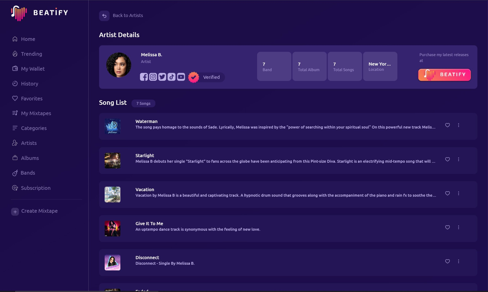

STREAMING RAIL
Streaming workflows connected to transparent monetization logic.
Publish, gate, and monetize media with product-grade user experience and operations-ready payout flows.

What this module solves
Traditional streaming stacks create opaque economics and weak creator tooling. This module prioritizes clarity, ownership, and operational continuity.
Media delivery workflows
Access and entitlement states
Micropayment-compatible architecture
Creator revenue visibility
Scalable payout workflow readiness
Platform-grade UX consistency
Deploy streaming as a system, not a feature.
We’ll help you design the full creator-to-consumer workflow from playback to payout logic.